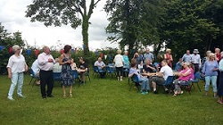

Most Village Hall events planned for 2020 could not go ahead due to Covid-19 constraints. However, the following activities did take place with appropriate social distancing -
Christmas 2020
12.12.2020 - Wreath making morning - This annual event had to be modified due to Covid-19 restrictions. Many people came at scheduled times to select the materials they wanted to use and take them home to construct their wreaths. However, a small party of friends decided to brave the cold and windy conditions and, social distancing, to make their wreaths in the Hall porch.


There were three Privett Christmas events organised by other groups with support from members of the Privett Village Hall committee -
Privett Angel Trail - residents of Privett were encouraged to be part of a Village 'trail' of Angels, creating them in their gardens and/or windows for people to walk or cycle around the village and find. There were some truly artistic and original creations that appeared.
Christmas Tree and Nativity Display - there was a Christmas Tree and a wonderful Nativity Scene set up in the Privett Churchyard. This was created out of the offcuts of logs that were a by-product of the churchyard clearing project.

Christmas Carols - Socially distanced carol singing took place one chilly, but dry, evening on 23rd December. All accompanied by a very fine trumpet player!

09.10.2020 - AGM - The meeting was postponed from the Spring but was eventually held at the Village Hall in the Autumn, complying with the current law and guidelines. However, attendance was limited and unfortunately there was no curry involved!
September 2020 - Changes to Privett Montessori Nursery
There has been a Montessori Nursery based in Privett Village Hall since 1988. From 2003 the Nursery was run by Kate Pritchard, and it flourished with up to twenty pupils, open mornings and afternoons for five days a week. However, Kate decided to retire in 2020 at the end of the Summer term.
The Village Hall Committee is very pleased that Veronica Van Ingen, who lives in Four Marks, agreed to take over the Nursery from Kate and to continue running it along the same lines in the Village Hall. Veronica, with her deputy Sarah Hawkins, opened her Nursery in September 2020 fully complying with current Covid-19 restrictions.
One of the special features of the Nursery is that the rural setting of Privett Village Hall, with its meadow area and garden, allowing for stimulating and creative outdoor play and learning in a safe environment, providing scope for young children to explore the natural world in our beautiful part of the South Downs.
The Nursery provides education of pre-school children based on Montessori teaching and learning principles. It continues to be a valuable resource for families from the village and the wider neighbourhood. Children from the Nursery go on to primary education at a state school in one of the neighbouring villages, or to a private school in the area.
Further details of the Montessori Nursery at Privett are available from its website: www.privettmontessori.co.uk
15 February 2019
This is advance notice that Privett Village Hall Trust has its Annual General Meeting on Saturday 27 April at
the Village Hall, beginning at 6.30 pm. Following the great success of last year, the AGM will be followed
by a Curry and Trifle Night – who said an AGM has to be boring?
Full details of the AGM and information about tickets for the Curry and Trifle Night will be given in
April’s magazine – but save the date now.
The committee which runs the Village Hall are looking for new members to be appointed at the AGM and anyone
who is interested in joining the committee should speak to the Chairman (Graham Flack: tel. 828170; email:
graham.flack@filmorehill.co.uk) or the Secretary
(Bridget Kindler: tel. 828214; email: bridgetkindler@hotmail.co.uk) for further information.
Last week, we held a Defibrillator training evening which ended up being so much more than that. The lovely ladies of Saving Lives Together came along to bring us up to date with the very latest wisdom on life saving techniques. We practiced CPR on dummies which made us understand just how hard you have to push, and then were shown the inner workings of our defibrillator.
We now know how hard it will be if we ever have to carry out CPR but how important it will be to have a go – and keep going! www.facebook.com/savinglivestogether.co.uk We cannot recommend them highly enough. Thank you to everyone involved in organising this evening.19 July 2018
The photo shows the exhibit created by representatives of the village hall for the very successful Privett Church Flower Festival. The theme for the arrangement was “Each little flower that opens, Each little bird that sings” from the well known hymn All Things Bright and Beautiful. Bright and beautiful may well be an ongoing theme in Privett at the moment with the glorious weather we have been having – and the recent family barbecue was no exception. Harvesting is now underway and we look forward to the Harvest Supper at the end of September.
5 June 2018
At the AGM in April, which was cunningly run alongside the ever popular curry night to ensure a good turnout, our inspirational Chairman Teresa Brown stood down from the Chair after 6 years. Before that she had been Treasurer for 3 years, and we are pleased to say she is staying on the committee for the time being. A presentation was made to Teresa as a token of gratitude for her contribution to village life and of the affection in which she is held.
We can also report that a new feature may be found at the hall thanks to the fund-raising efforts of Howard Bevis of Froxfield Stores and Post Office. A defibrillator has now been installed by the front door, and it would good if we can let as many people in the village know about this as possible. Howard joined in the Great South Run and managed to raise enough money for two defibrillators, one each for Froxfield and Privett. Many thanks go to him for this great effort for our community.15 January 2018
 Over
the winter months the Village Hall arranges, in conjunction with Moviola, two "Film Plus" evenings
- the screening, in High Definition and with Dolby sound, of a recent film. The aim is to provide an
evening which offers more than is available at the nearest Multiplex cinema, and so, together with the film,
a light supper or substantial snack is provided - "themed", if possible, to the film which
follows. The November 2017 screening of the recent remake of "Whisky Galore" was a
particular success - for their ticket for the evening punters were treated to a whisky-tasting in the course
of which a local resident, with many years in the whisky trade, explained the secrets of the whisky-making
process and introduced five different whiskies with tasting notes for all to try. It would be fair to
say that the film, which followed, was enjoyed in a mellow, comfortable, and appreciative glow!
Over
the winter months the Village Hall arranges, in conjunction with Moviola, two "Film Plus" evenings
- the screening, in High Definition and with Dolby sound, of a recent film. The aim is to provide an
evening which offers more than is available at the nearest Multiplex cinema, and so, together with the film,
a light supper or substantial snack is provided - "themed", if possible, to the film which
follows. The November 2017 screening of the recent remake of "Whisky Galore" was a
particular success - for their ticket for the evening punters were treated to a whisky-tasting in the course
of which a local resident, with many years in the whisky trade, explained the secrets of the whisky-making
process and introduced five different whiskies with tasting notes for all to try. It would be fair to
say that the film, which followed, was enjoyed in a mellow, comfortable, and appreciative glow!
More recently, just last weekend we showed the film “Lion” to a packed hall. This was the true story of a lost Indian boy and to put us in the mood for this one, an array of Indian street food was served beforehand, along with Cobra beer!
4 December 2017
The most recent event at the hall was the annual Christmas wreath-making morning – which this year had more options than ever for different types of wreath and other Christmas decorations. As usual, a productive morning was finished with a light lunch and everyone left feeling ready to begin the countdown to Christmas.
The committee have continued to invest in the future of the hall, the latest addition being some new and improved lighting. This can only add to the versatility of the hall and make it more useful to one and all.9 May 2017
The AGM in April was better attended than usual. This was probably down to the cheese and wine which had been laid on to tempt people! As usual the AGM was short and sweet, with summaries of the financial situation and the activities which have taken place through the previous year, both of which were satisfactory. Several new members were welcomed onto the committee outnumbering the two who stood down.
Towards the end of April, a group of around 30 met at the hall on a Saturday morning for a bacon butty and hot drink before heading down to nearby Cheriton where we were guided around the site of the Battle of Cheriton. We are indebted to John Seal who enthusiastically helped us imagine how things might have been back in 1644. Thanks again, John.
26 February 2017
It was lovely to see a good crowd at Movie night yesterday. It’s particularly good to see lots of different faces coming along. I think everyone enjoyed the bespoke locally made sausages in the hot-dogs – we certainly had fun discussing the problems in matching shrunken sausage size to hot dog bun size beforehand!
Thanks to Bridget who gave the floor a re-coat of varnish during the half term week – it’s looking all lovely and shiny again now.
23 January 2017
It may have been icy outside, but it was toasty in the hall last Saturday as more than 70 people filled it for Curry Night, justifying it’s billing as a “very popular event”! Many of those who came brought along a home-made curry or trifle and we had a veritable feast. The variety of curries was huge and they were all delicious. I must just give a special thank you to the trifle-makers who pulled out all the stops with a spectacular array – I for, one, did my best to try as many as possible!
The new Tuesday night yoga sessions have proved to be very popular. There is no excuse for a lack of exercise for anyone in the area now with weekly classes of yoga on Tuesdays and high energy fitness training on Thursdays. We are lucky to have two great instructors: it’s great to see the hall being used in this way. See the events page for details of both if you would like to try them.
5 December 2016
We’ve just held our annual community wreath-making morning, with more people than ever attending. We were especially pleased to welcome two newbies to the village, Emma and Gillian, and we hope to see them at some of our other events. The next film has just been chosen for the February film night – it will be the recent version of The Magnificent Seven. See events page for details as they emerge, but put 25 February in your new 2017 diaries now!27 November 2016
Where does the time go? Well, the most recent event at the hall was another very successful film night. There is quite a large outlay for bringing in the large screen and cinema quality sound from Moviola, so it is important that these nights are well supported. We served up a chilli con carne supper before the movie, then a glamorous usherette made her way to the front with a tray of ice-creams during an interlude! (Thanks Joanna!) The film, Florence Foster Jenkins, was excellent and thoroughly recommended for those who missed it.
Next week we are holding our annual communal wreath-making morning. This has become a fixture in the diaries of anyone who has ever been: such a great way to kick off Christmas, and Privett is very well adorned afterwards!25 July 2016
We’ve been busy at the hall during the last few weeks. As nursery school’s summer term ended, we held a family barbecue which was blessed with the fine weather we have come to expect at village hall events! Particular thanks go to Cameron and Marites who did a great job cooking all the locally produced meat, to Pam and Keith who held the fort in the kitchen and kept the children well supplied with ice cream sodas and last but not least to Fiona, who for the nth year prepared a mammoth bowl of strawberries for us all to enjoy!
Ian made a farewell speech to Jason, Rebekah and their family who were about to return to the USA after spending the last few years in Privett: they have all been invited to return at any time!
Councillor Nick Drew has approved a grant to help us buy a new cooker for the village hall: many thanks again Nick! A thorough clear out of the kitchen has subsequently taken place in order to make way for it, along with an overdue spring clean of the rest of the hall. A huge thank you to Pam and Bridget for overseeing all of this.2 May 2016
 Privett
joined in the nation-wide celebrations of the Shakespeare 400th anniversary with a feast and entertainment
on St George’s Day – it was a special and memorable evening.
Privett
joined in the nation-wide celebrations of the Shakespeare 400th anniversary with a feast and entertainment
on St George’s Day – it was a special and memorable evening.
The Village Hall was decorated with St George’s flag bunting and over 40 people sat down to a feast in the Elizabethan style, with meat pies, pasties, chicken, ham, fish, cheese, bread, trifles and cakes. Good local ale was served.
For entertainment we were treated to lute music and extracts from several of Shakespeare’s plays and sonnets. Amanda Cook is a guitar player with an international performance career, and she had carefully chosen, and introduced, music of the period, some of which we can be certain Shakespeare would have known. Five members of the Lion and Unicorn Players from Petersfield showed us, in characterful and dramatic readings, Shakespeare dealing with love, ambition, vengeance, war and patriotism – our very own Globe Theatre for the evening.11 April 2016
So, as well as being the base for an Easter pilgrimage walk on Good Friday, and being the venue for this year’s Garden Club Spring Show, the hall was also used in March when the committee organised a Talk on WWI’s Battle of Jutland to commemorate its upcoming 100th anniversary. This was very much enjoyed by all who attended and many thanks have to go to Christopher Knox who gave the talk. Look out for an interesting exhibition in Portsmouth arranged by the National Museum of the Royal Navy.
20 February 2016
We have now held 3 trial film nights, trying out different formats. Weekends, mid-week, with food options or just light refreshments. The film choices were enjoyed by those who came and movie nights seemed popular in general. We will need to ensure good attendance if we are to continue, as there is quite a significant cost involved in providing the excellent cinematic experience! Any feedback would be gratefully received while we discuss what happens next.18 January 2016
Things got a little hectic at the hall during November and December with the sudden demise of the soakaway. Local builders were approached for quotes and with a bit of luck we were able to get the problem sorted during the Christmas holidays with minimal disruption to the Nursery School. We would very much like to thank our Parish Council, EHDC Councillor Nick Drew and Hampshire County Councillor Vaughan Clarke who have all contributed to the cost of this emergency work at our time of need and have effectively enabled the hall to be kept open!
Last Saturday was the second of our Movie nights, and on this occasion there was the option to come for a curry beforehand. About 50 people took us up on this offer, with a few more coming along just for the film. Popular opinion seemed to be that the film was good (Dark Horse) and everyone seems to be enjoying the concept of cinema coming to Privett. It is not a cheap enterprise, so we do need good numbers of people to come if we are to cover costs and continue.
Please check out Arts and Crafts dates – so far we have painters, knitters and someone doing crochet. Everyone would be welcome.18 November 2015
Two new ventures at the hall to mention: -
Firstly, on 28th November we will be holding our first Movie evening, with the help of Moviola who provide films in rural areas. It seems to be a popular idea, and we hoping this enthusiasm translates into ‘bums on seats’ on the night. If so, this could be the first of many such evenings.
Secondly we have now held three arts and crafts sessions at the hall, with another coming up on Saturday 21st November at 10 am. These are simply opportunity to bring along your chosen project and have a go in the presence of other like-minded people, and share tips and advice. There is a minimal £2 charge to cover hall costs. We have had mainly artists, but one knitter also, and we hope to encourage all sorts of crafters to come along too. Please do join us! Keep an eye on the website for more dates.1 October 2015
The annual harvest supper was well attended last Saturday and provided an opportunity to try out the new festoon party lights which can be used inside or out at the hall. Thanks go to Nigel for his help in putting these lights up. As usual our friends and neighbours brought along a fine array of dishes for the feast. It was all the more lovely holding this during the most fabulous settled autumn weather.
We are soon to be holding the first movie night at the hall. Please keep 28th November free to come and see Far from the Madding Crowd.10 August 2015
Thursday night fitness has been well supported since beginning in June. There is now going to be a 3-week break but it will commence again on Thursday 3 September 7 – 8pm. See 19 May entry for details.
The early summer months saw two village events at the hall. Firstly there was a barn dance with music and calling provided by Saxon Drain. Many thanks go to them (www.saxondrain.org.uk). Then in July we held the popular summer barbecue, complete with Pimms and local beer for the adults and a bouncy castle for the kids. Once again Teresa got everyone talking with her quiz to test local knowledge – this time it was matching dogs to their owners – luckily it was a picture quiz!
19 May 2015
We are pleased to announce that starting on Thursday 4th June there will be a new Circuit Training Class for those wanting to improve fitness. All levels and abilities are welcome. Click here for the information poster or check out the website www.targetpersonaltraining.com7 April 2015
It’s been busy at the hall for the last month or so. In February we held the ever-popular village quiz. For supper we had organised a visit from The Jolly Fryers who provided everyone with award-winning fish and chips. This went down very well with plenty of beer and wine and everyone had fun which was the main thing!
The hall was briefly transformed into a floral paradise when the Froxfield and Privett Horticultural Society held their Spring Show at the hall in March, and just last weekend the hall provided the starting and finishing point for an Easter themed walk which took us over the A32 to the 12th century church in West Tisted. Children and adults alike enjoyed the chocolate treats along the way and a hot soup lunch with home-made cakes was most welcome at the end.19 January 2015
So what’s been happening since Christmas? Well, firstly we have to thank a local working party who took on the challenge, between Christmas and New Year, of improving the tree-lined boundary to the hall grounds. This was a big job as there was a lot of cutting back to be done, and then disposal of the waste. Huge thanks to John Kindler, who knowledgeably organised the work, and to the other volunteers... Barry, Nigel, Jason, Cameron, John C and Graham.
We have just had new, more secure and safer fire doors fitted at the hall, and would like to thank the East Hampshire District Council Cabinet for approving a grant to contribute towards the cost of this work.
And finally, on Saturday night at the suggestion of local Privett resident, Phil, we organised a
curry-tasting evening. The committee received the following email.... “Just to say how much [we]
enjoyed last night, and to thank you and everyone else who obviously worked so hard to make it happen. The
food was absolutely delicious - what talented cooks there are in the village! It was a great idea to have a
Curry Night in the depths of January, and it was top notch”
Our sentiments, exactly! Maybe we should do it again next year?
8 December 2014
On Saturday, creative juices were flowing as more than a dozen of us gathered at the hall to make Christmas wreaths for our front doors and other Christmas decorations. Chat, chocolate biscuits, coffee and mulled wine kept us going through the morning, then we finished off with a light lunch. The finished articles were all different, but equally lovely. Everyone agreed that it was a really enjoyable morning. Thanks to those who supplied all the bits and bobs required – and those who gave advice and shared tips.31 October 2014
The Harvest Supper was held in the Hall on Saturday 27th September. The event was well supported with over 60 people in attendance.
The Committee were pleased that some past Committee members were able to come. Comments were made about the strong sense of community that is present in Privett.
The main course was local cold meats together with home cooked quiches and a variety of interesting and colourful salads prepared by residents. This was followed by a superb selection of delicious desserts and cheese. The supper was thoroughly enjoyed by everyone.
Thanks are extended to all who helped before, during and after this first class event.4 September 2014
During the earlier part of August, committee members Peter and Bridget spent a good many days redecorating the lobby and end wall of the main hall, and with help from Nigel and a sander, renovated the wooden floor too. It all looks wonderful, and I’m sure everyone who uses the hall will appreciate their hard work.
It was lovely to see so many people at our black tie dinner and dance last Saturday to celebrate 50 years of Privett Village Hall, and to make use of our recently renovated venue. The hall was transformed for the evening with fairy lights, and the usual welly boots and country clothing we are used to wearing were cast aside in favour of a more glamorous look: I think we quite surprised ourselves! We have to thank Angie and her team for serving up a fantastic four course dinner, the local youngsters who waited table and manned the bar, and the wonderful May Contain Nuts who played a wide variety of music to keep the dance floor full all evening. Thanks too (ahem!) to Teresa and the rest of the committee for their hard work in making this event happen and to all friends from the village who turned up to help with setting up and clearing up. We are also grateful to the many people and organisations who lent us equipment and helped us keep costs down.18th July 2014
.jpg) Once
again, Privett was blessed with a perfect sunny afternoon for the summer barbecue. Despite a forecast of
showers, the committee confidently set up tables and chairs outside and their confidence was rewarded!
Around 70 people including many families came along for the afternoon. The children enjoyed the bouncy
castle, the adults enjoyed the
Once
again, Privett was blessed with a perfect sunny afternoon for the summer barbecue. Despite a forecast of
showers, the committee confidently set up tables and chairs outside and their confidence was rewarded!
Around 70 people including many families came along for the afternoon. The children enjoyed the bouncy
castle, the adults enjoyed the .jpg) Pimms and local beer and everyone enjoyed
the lunch, expertly cooked by Francis, Kevin and Nic. A couple of recent birthdays were acknowledged with a
village-sized chocolate cake, and while we finished our meal with strawberries and cream many of us
challenged ourselves with a Privett picture quiz. Many thanks to everyone who helped: too many to mention.
Pimms and local beer and everyone enjoyed
the lunch, expertly cooked by Francis, Kevin and Nic. A couple of recent birthdays were acknowledged with a
village-sized chocolate cake, and while we finished our meal with strawberries and cream many of us
challenged ourselves with a Privett picture quiz. Many thanks to everyone who helped: too many to mention.
9th May 2014
First World War Evening
 An evening event was held at Privett Village Hall on 9th May to commemorate the 100th
anniversary of the start of the First World War.
An evening event was held at Privett Village Hall on 9th May to commemorate the 100th
anniversary of the start of the First World War.
The event was introduced by Ian Hughes who spoke of a visit to Sandham Memorial Chapel, near Newbury. The chapel is a memorial to the ‘Forgotten Dead’, those who died as a result of the War but are not commemorated on a War Memorial. The walls of the chapel feature the work of the war artist Stanley Spencer.
Lieutenant-Colonel Jason Smith of the US Marines referred to his recent visit to the battlefields in France and read a poem titled ‘In Memoriam’ by Ewart Alan Mackintosh. The poem is written to the father of one of Lieutenant Mackintosh’s men who was lost in battle but it is also a reflection on the responsibility felt by the officer towards his men.
Anne Flynn next spoke of her father, Captain Alexander Beck. He was a pilot in the Royal Flying Corps and was awarded the Distinguished Flying Cross. Anne brought along the propeller of his plane together with two German crosses cut from the fabric of aircraft he shot down. It was interesting to hear how Anne’s father took a nonchalant approach to the dangers of flying and aspects of his experiences were amusing.
Maconochie stew was then served. This was a meat and vegetable dish that was similar to that cooked and served in the trenches.
The evening resumed with a presentation by David Key on the military camps around Winchester. Initially these camps were transit camps for soldiers going to France and Belgium. The soldiers came from all parts of the British Isles as well as the Empire. Later in the War the camps became bases for specialist army units. The conditions in the camps were appalling in bad weather with deep mud on the chalk downland a particular difficulty.
The evening concluded with a talk by Terry Muldoon which focussed on 1914. We learned that at the start of the War the army numbered about 500,000, including the Reserves and the Territorials. The initial approach was to bring back the regular troops from their bases in the Empire and send them to the Western Front. The contribution of the British army at the beginning of the War in 1914 was small and described by The Kaiser as ‘a contemptible little army’. Many were killed at the battle of Mons but those survivors, referred to as ‘the Old Contemptibles’, helped train the volunteers and, subsequently, the conscripted troops as the war progressed.
Terry brought some rifles to show and demonstrated how they would have been used.
As there is so much to present it is hoped to have another event in due course.3 May 2014
.jpg) On 10 March we began the second major phase of building work at the hall which was the
addition of an extension for storage purposes. This work was completed in time for the beginning of the
nursery school summer term at the end of April. The main hall is now fresh, warm and free
On 10 March we began the second major phase of building work at the hall which was the
addition of an extension for storage purposes. This work was completed in time for the beginning of the
nursery school summer term at the end of April. The main hall is now fresh, warm and free .jpg) of all the clutter that used to fill a large part of it! Security lighting has
been installed all around the outside. There are still a few minor renovations to carry out, so we will be
continuing to fundraise for a little longer, but the bulk of the work has now been done. We will be updating
the renovation page soon with a list of the many people we would like to thank who have helped us along the
way.
of all the clutter that used to fill a large part of it! Security lighting has
been installed all around the outside. There are still a few minor renovations to carry out, so we will be
continuing to fundraise for a little longer, but the bulk of the work has now been done. We will be updating
the renovation page soon with a list of the many people we would like to thank who have helped us along the
way.
.jpg) We were
blessed, again, with a gloriously sunny day for the group walk we had arranged through Privett this morning,
which took in not only the bluebells and flowering rape fields, but also a chance to explore secret parts of the
church including the crypt and the bell tower where we were given a bell-ringing demonstration. Afterwards we
headed back to the hall for the homemade soup, fresh bread and chocolate brownies which has become a popular end
to the several walks we have now organised. Many thanks to the soup-makers, the bakers, and those who helped
with setting up and clearing up.
We were
blessed, again, with a gloriously sunny day for the group walk we had arranged through Privett this morning,
which took in not only the bluebells and flowering rape fields, but also a chance to explore secret parts of the
church including the crypt and the bell tower where we were given a bell-ringing demonstration. Afterwards we
headed back to the hall for the homemade soup, fresh bread and chocolate brownies which has become a popular end
to the several walks we have now organised. Many thanks to the soup-makers, the bakers, and those who helped
with setting up and clearing up.
.jpg) 1 April 2014
1 April 2014
March saw us preparing for the commencement of the second phase of building work. As a result, the AGM was rather low key, but the Froxfield and Privett Horticultural Society Spring Show, which went ahead despite the building work, more than made up for this with a colourful, well-attended and enjoyable day.
28 Feburary 2014
.jpg) On 15 February we held a particularly lively quiz, which was very well attended as
usual. Some of the questions had a ‘valentines’ theme, but all of them provoked good debate
within the teams. Many thanks to our regular quiz-master James Plant for this. We were very well looked
after with food and drink and I’m sure everyone will be keen to take part in the next quiz.
On 15 February we held a particularly lively quiz, which was very well attended as
usual. Some of the questions had a ‘valentines’ theme, but all of them provoked good debate
within the teams. Many thanks to our regular quiz-master James Plant for this. We were very well looked
after with food and drink and I’m sure everyone will be keen to take part in the next quiz.
Change is already afoot at the hall, with final preparations for the building work which will start in a couple of weeks time. We are all looking forward to the extra space in the hall, and the extra space for storage. Fingers crossed for good weather!
21 January 2014
.jpg) On Friday evening we held a cookery demonstration with the theme of canapés and
nibbles, at the village hall. Local caterer, Angie Trenchard came along with a wealth of different
ingredients and put together a whole range of tasty treats, both hot and cold, which we were able to try
with a glass of wine. Angie was very happy to answer questions and let us have a go at preparing some of
our own canapés. We hope everyone went home inspired and satisfied. Many thanks go to Angie and Teresa for
organising everything.
On Friday evening we held a cookery demonstration with the theme of canapés and
nibbles, at the village hall. Local caterer, Angie Trenchard came along with a wealth of different
ingredients and put together a whole range of tasty treats, both hot and cold, which we were able to try
with a glass of wine. Angie was very happy to answer questions and let us have a go at preparing some of
our own canapés. We hope everyone went home inspired and satisfied. Many thanks go to Angie and Teresa for
organising everything.
18 December 2013
.jpg) On
Saturday 7 December, a group of ten ladies spent the morning making Christmas wreaths for their front doors,
and other Christmas table decorations. A large amount of greenery had been collected and some accessories
and ribbons were provided. Advice and tips were shared and it proved to be a thoroughly enjoyable way of
carrying out this annual task. The morning ended with a light lunch. Everyone agreed this would make an
excellent annual activity.
On
Saturday 7 December, a group of ten ladies spent the morning making Christmas wreaths for their front doors,
and other Christmas table decorations. A large amount of greenery had been collected and some accessories
and ribbons were provided. Advice and tips were shared and it proved to be a thoroughly enjoyable way of
carrying out this annual task. The morning ended with a light lunch. Everyone agreed this would make an
excellent annual activity.
More recently, we have been canvassing votes to win some funding from the Country Market, Bordon, as one of their X-citing projects. Unfortunately, we didn’t win the vote (we were up against some very worthy opponents), however, we were given feedback that indicated we had received a huge amount of support, so we would like to thank everyone who voted for us.
.jpg) 19 November 2013
19 November 2013
What a busy weekend at the hall. On Friday night the food experts from Flavour Tastings and Events came
along to run a Cheese Tasting evening for us. The theme was England v France and we were treated to a
variety of lovely cheeses to compare accompanied by a wealth of cheese related information. Great fun, and
very tasty! www.flavourtastings.co.uk
.jpg) After
all that cheese, many of those who came on Friday night were glad they had signed up for the Local Interest
Walk which had been arranged for the next morning. Around 70 people joined us on a beautiful sunny morning
on a walk that took us into the old railway tunnel which runs under Privett and then back into the sunlight
to walk to the old station which is now a house. The owners had kindly agreed to show us around the back of
the house where you can still see the old platform. Back at the hall, we were rewarded with a choice of
home-made soups, hunks of fresh bread and butter, and homemade cakes. I think it’s safe to say everyone is
looking forward to the next organised
After
all that cheese, many of those who came on Friday night were glad they had signed up for the Local Interest
Walk which had been arranged for the next morning. Around 70 people joined us on a beautiful sunny morning
on a walk that took us into the old railway tunnel which runs under Privett and then back into the sunlight
to walk to the old station which is now a house. The owners had kindly agreed to show us around the back of
the house where you can still see the old platform. Back at the hall, we were rewarded with a choice of
home-made soups, hunks of fresh bread and butter, and homemade cakes. I think it’s safe to say everyone is
looking forward to the next organised .jpg) walk which will be in
the spring, and will hopefully include a visit to the less accessible parts of Privett’s church: the crypt
and the bell-tower.
walk which will be in
the spring, and will hopefully include a visit to the less accessible parts of Privett’s church: the crypt
and the bell-tower.
Thanks to Louise and Ralf from Flavour Tastings, Ray Stone for the information and pictures of the Privett section of the Meon Valley Railway, the keeper of the tunnel, the owners of the old station house, Ian who arranged the sunny day, and all the soup and cake makers!
14 October 2013

Supported by Hampshire County Council
We are very pleased to announce that we have successfully applied to Hampshire County Council for funding for our village hall renovation and extension project and they have awarded us a grant of up to 25% of the actual project costs (to a maximum £25,000). This puts us in the position of having enough funding to go ahead and complete the project as soon as this can be arranged. Building work is likely to take place in the spring next year.
22 September 2013
It was lovely to be able to use the hall for a social event after the first stage of the renovation was carried out during the summer. The occasion was a Harvest Lunch and over 60 people from the village got together for a delicious buffet lunch. It was particularly pleasing to see representatives from all age groups there, as well as some new faces, and I think it’s fair to say that everyone enjoyed themselves.
.jpg)
.jpg)
We are hoping to hear the outcome of two more grant applications quite soon, and if successful, we will be able to look towards starting the second stage of the renovation early next year.
4 September 2013
.jpg) The first phase of the renovations has been completed ahead of schedule and we are
very pleased with the results. Many thanks to Stephen Rozario, our builder, and his team for a great job (www.rozarioprojects.co.uk).
The first phase of the renovations has been completed ahead of schedule and we are
very pleased with the results. Many thanks to Stephen Rozario, our builder, and his team for a great job (www.rozarioprojects.co.uk).
The new insulated roof, insulated walls, and new boiler and radiators should mean that the hall stays cosy
and dry inside during cold and wet spells: neither of which were possible before. And the new porch not only
looks very grand, but will offer a large sheltered area outside all year round.
The next month or two will hopefully see us making a start on the next stage which is an extension for
storage with accompanying electrical work and updated lighting in the hall. Just a final fundraising push
needed.
21 August 2013
.jpg) Great progress is being made at the hall with the first phase of building work well
underway. The new roof is on, the walls have been insulated and a grand new porch is taking shape. By the
time the school term starts there should be a new heating system in place too. The future is looking warm
and cosy in Privett Village Hall!
Great progress is being made at the hall with the first phase of building work well
underway. The new roof is on, the walls have been insulated and a grand new porch is taking shape. By the
time the school term starts there should be a new heating system in place too. The future is looking warm
and cosy in Privett Village Hall!
16 July 2013
A big Thank You to Alex for letting us use her beautiful garden in Filmore Hill for our summer picnic last Sunday. It was very hot but luckily there were shady spots to sit and chat (and check on the latest cricket score!) and plenty of ice for the Pimms and home made elderflower cordial, as well as a delicious selection of contributions for the picnic table.
There is also more news about grants we have been given for the renovations: we are grateful to the co-operative community membership fund for £1,900 towards the new porch and to the Garfield Weston Foundation for £3,000. We have also been promised another £6,198 from the local developers fund, so thanks also go to EHDC.
We hope to have more news about the start of building work very soon.
12 June 2013
We are thrilled to announce that we have been granted £10,000 from the Big Lottery Fund towards the cost of
the new roof for the hall. Work on the roof is due to take place this summer.
7 June 2013
.jpg) Last night, on a beautiful sunny evening at the hall, there was a flower
arranging demonstration given to us by the lovely Pam Smout and assisted by her friend Sam. Pam very
thoughtfully showed us how to use the sorts of flowers that we might easily find in our gardens or the
hedgerows to make several gorgeous arrangements. These were then raffled off at the end so that several
lucky people took arrangements home with them.
Last night, on a beautiful sunny evening at the hall, there was a flower
arranging demonstration given to us by the lovely Pam Smout and assisted by her friend Sam. Pam very
thoughtfully showed us how to use the sorts of flowers that we might easily find in our gardens or the
hedgerows to make several gorgeous arrangements. These were then raffled off at the end so that several
lucky people took arrangements home with them.
Pam is clearly passionate about flower arranging but also loves to help good causes at the same time, so
we'd like to thank Pam very much for coming along to Privett to help us with our fundraising and for giving
us an inspiring demonstration.
14 May 2013
.jpg) The auction on 11 May was a really big event for us. The idea came from Jonathan
Pratt who, aware of our need to raise funds for work at the village hall, volunteered his services as
auctioneer. Inexperienced as we were, we took on the challenge of first finding items to auction, then
sorting them, cataloguing them and in some cases, just identifying them! We also had to ‘up our game’
when it came to advertising and promoting as we hoped to pull in a larger audience than we are used to.
The auction on 11 May was a really big event for us. The idea came from Jonathan
Pratt who, aware of our need to raise funds for work at the village hall, volunteered his services as
auctioneer. Inexperienced as we were, we took on the challenge of first finding items to auction, then
sorting them, cataloguing them and in some cases, just identifying them! We also had to ‘up our game’
when it came to advertising and promoting as we hoped to pull in a larger audience than we are used to.
By the evening of Friday 10th – we had filled Privett Church with over 300 items for the auction: a great many people turned out to help for which the committee were very grateful.
A good crowd arrived by Saturday afternoon, and there was an excited buzz in the air while viewing took place. Local beer, locally made pasties and home-made cakes were among the refreshments provided, while activities were organised for young children in the Privett Centre next door.
Jonathan Pratt proved to be an enthusiastic, knowledgeable and entertaining auctioneer and he refused to let a single item remain unsold. He did an absolutely magnificent job and we couldn’t be more pleased with the outcome. An exact figure will be revealed soon, but it looks like it will be around £7,000. Just as importantly, it seemed like everyone who came had a good day.
One of the most rewarding things about being involved with this auction was that so many people stepped in to help make it the great success it was. Thank you to everyone: too many to name here!